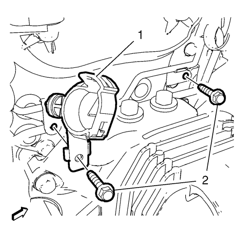
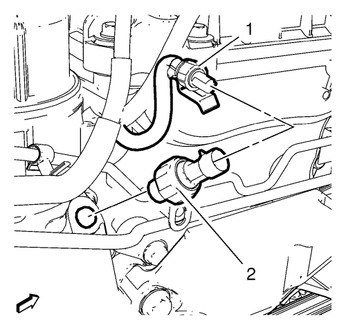

Diagnóstico y comprobación de la presión de aceite
Herramientas especiales
| • | EN-135 Adaptador de comprobación de la presión del aceite |
| • | GE-498-B Indicador de presión de aceite |
Si desea informarse sobre herramientas regionales equivalentes, consultar Herramientas especiales .
Procedimiento de desmontaje
- Desconecte el cable negativo de la batería. Consultar Desconexión y conexión del cable negativo de la batería .
- Desmontar la pantalla de protección del motor. Consultar Sustitución del protector del motor .
- Extraiga el conjunto del filtro de aire. Consultar Sustitución del filtro de aire .
- Fije con clips el tubo flexible de salida del depósito del líquido de la dirección asistida fuera de los 2 soportes y cuélguelo a un lado.

- Retire los 2 tornillos (2) de los soportes de montaje. Retire el soporte del tubo flexible de salida del depósito del líquido de la servodirección (1).

- Desemborne el enchufe del mazo de cables del interruptor de presión del aceite (1) del interruptor de presión del aceite de motor (2).
- Retire el interruptor de presión del aceite de motor (2).
Procedimiento de medición

- Instale el adaptador EN-135 (1).
- Monte la galga de espesores GE-498-B (2) en el adaptador EN-135 (1).
- Monte el sensor de flujo de masa de aire en el conducto de salida del filtro de aceite.
- Emborne el enchufe del mazo de cables del sensor de flujo de masa de aire al sensor de flujo de masa de aire.
- Conecte el cable negativo de la batería. Consultar Desconexión y conexión del cable negativo de la batería .
- Arranque el motor.
- Compruebe la presión de aceite.
- Compare los valores con los indicados en las especificaciones mecánicas del motor. Consultar Especificaciones mecánicas del motor .
- Apague el motor.
- Desconecte el cable negativo de la batería. Consultar Desconexión y conexión del cable negativo de la batería .
- Desemborne el enchufe del mazo de cables del sensor de flujo de masa de aire del sensor de flujo de masa de aire.
- Retire el sensor de flujo de masa de aire del conducto de salida del filtro de aceite.
- Retire la galga de espesores GE-498-B (2).
- Retire el adaptador EN-135 (1).
Procedimiento de montaje
Precaución:Consulte Precaución con las fijaciones en la sección Prólogo.
- Monte el interruptor de presión del aceite de motor y apriételo a 20 N·m (15 lib. pie).
- Emborne el enchufe del mazo de cables del interruptor de presión del aceite (1) al interruptor de presión del aceite de motor (2).
- Monte el soporte de montaje del tubo flexible de salida del depósito del líquido de la servodirección (1). Monte los 2 tornillos (2) en los soportes de montaje y apriételos a 10 N·m (89 lib. pulg.).
- Fije con clips el tubo flexible de salida del depósito del líquido de la dirección asistida a los 2 soportes.
- Monte el conjunto del filtro de aire. Consultar Sustitución del filtro de aire .
- Monte el protector del motor. Consultar Sustitución del protector del motor .
- Conecte el cable negativo de la batería. Consultar Desconexión y conexión del cable negativo de la batería .
| © Copyright Chevrolet. All rights reserved |